http://www.fwbuilder.org
| Author: vadim@fwbuilder.org http://www.fwbuilder.org |
This article continues the series of articles on Fireall Builder, a graphical firewall configuration and management tool that supports many Open Source firewall platforms as well as Cisco IOS access lists and Cisco ASA (PIX). Firewall Builder was introduced on this site earlier with articles Getting Started With Firewall Builder, Using Built-In Revision Control In Firewall Builder, Using Built-in Policy Installer in Firewall Builder, Using Firewall Object In Firewall Builder. This article demonstrates how you can work with TCP and UDP service objects in Firewall Builder.
More information on Firewall Builder, pre-built binary packages and source code, documentation and Firewall Builder Cookbook can be found on the project web site at www.fwbuilder.org. Watch Project Blog for announcements and articles on all aspects of using Firewall Builder.
The TCP Service object is a generalization of the TCP protocol, which provides a connection-oriented reliable byte stream service. Many well-known, frequently used application protocols use TCP protocol: FTP (File Transfer Protocol), SMTP (Simple Mail Transfer Protocol), HTTP (Hyper Text Transfer Protocol), and so on. The TCP header contains special fields indicating source and destination port numbers that are used to identify the sending and receiving application. These two values, along with the source and destination IP addresses in the IP header, uniquely identify each connection.
Since port numbers are used to distinguish applications using the data stream provided by the TCP protocol, each application should use a unique port number. To ensure interoperability, these numbers must be assigned by a central authority in a coordinated manner. Internet Assigned Numbers Authority (IANA) does just that. Assigned TCP and UDP port numbers can be looked up at http://www.iana.org/assignments/port-numbers. Most Unix systems also come with a /etc/services file that contains a list of assigned port numbers.
Firewall Builder comes with a collection of predefined TCP Service objects with port numbers already configured. You can simply use these objects in your policy rules, so you do not have to look up port numbers every time you need them. These objects are part of the Standard Objects library and are located in the Services / TCP branch.
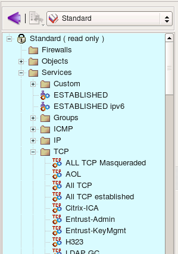The typical TCP Service object is represented in the following screenshot:
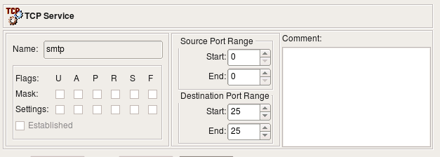In Firewall Builder, the TCP Service object is a generalization of TCP protocol. The TCP header of a packet carries only one fixed value for the source port and one fixed value for the destination port. The TCP Service object allows a range of values to be used for the source and destination ports. This allows a single TCP Service object to describe either a family of protocols using consecutive port numbers, or a protocol that may use variable port numbers or simply many protocols that use port numbers from a certain range. For example, on Unix systems, TCP sessions opened by a privileged process always have their source port number assigned from a range below 1024, while unprivileged processes use source port numbers from a range starting from 1024 and above. The TCP Service object with a source port range defined as shown in the following screenshot describes all privileged TCP sessions.
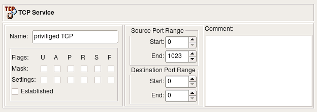Using ’0’ as both start and end values for a range means ’any value’ for that range. The source port range of the ’privileged TCP’ object starts from 0 and ends at 1023 (port ranges are inclusive in Firewall Builder), while its destination port range’s start and end are both set to zero, which means ’any destination port’. This object describes any TCP protocol with a source port in range 0-1023 and any destination port.
If all you need is to create an object to describe the TCP protocol with a particular destination port, just use the same port number for both the start and end of a destination port range (which effectively creates a range that consists of a single value). The example in Figure 6-70 shows such a service.
The TCP header also contains a collection of one-bit fields, or flags, that carry a variety of control information. For example, the SYN and ACK flags are used for connection establishment and the FIN flag is used for connection termination. Certain combinations of flags are not allowed during the normal protocol operation and may cause unpredicted reactions in some systems; because of this, the firewall administrator may want to block TCP packets with unwanted combination of flags.
There are six flags in the TCP header. We just briefly mention them here; more information can be found in TCP/IP Illustrated, vol 1 by W. Richard Stevens, chapter 17.
| U (URG) | The "urgent" pointer is valid |
| A (ACK) | The acknowledgment number is valid |
| P (PSH) | The receiver should pass this data to the application as soon as possible |
| R (RST) | Reset the connection |
| S (SYN) | Synchronize sequence numbers to initiate a connection. |
| F (FIN) | The sender is finished sending data. |
"Established" is not a TCP flag. Instead, checking this box causes the firewall to match any packet in an established session. Checking this checkbox disables the other TCP flag controls.
Firewall Builder supports all six flags, although not all target firewall platforms can match all combinations of TCP flags or any flags at all. For example, iptables, pf, ipfilter and ipfw can match flags and their combinations, but Cisco PIX can not.
Usually the firewall can not only match a combination of flags, but can also examine only a given subset of TCP flags. Firewall Builder provides two sets of checkboxes for TCP flags and flag masks (see screenshot below). Checkboxes in the first row control TCP flags that we want the firewall to examine and checkboxes in the second row tell it whether they should be set or cleared. Only flags whose checkboxes in the first row are set will be looked at by the firewall. The object in the screenshot matches a TCP packet with any combination of port numbers, the TCP flag SYN set, and all other flags cleared. The firewall will examine all TCP flags.
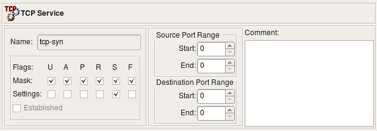A Combination of flags and a mask can be used in a rule that looks for some flags to be set or unset and ignores other ones regardless of their state. For example, we can create a rule that detects a so called "null scan" which is done using TCP packets with all flags cleared. For this rule we create a TCP Service object "tcp null scan" where all flag masks are set but all TCP flags are cleared. This means we examine all flags but only match them if they are all cleared. This object is represented in the following screenshot:
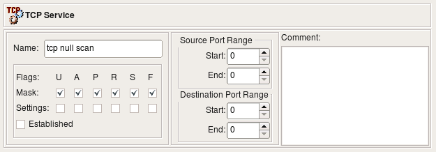TCP Service dialog provides the following controls:
Lets start with an example of using simple TCP service that describes HTTP protocol. Both the beginning and the end of the source port range in this service object are set to "0" which means the program will leave these out when it generates target firewall configuration. The destination port range is defined as "80-80" which means the object describes just single destination tcp port "80". All flag checkboxes are unchecked which means no flag-matching configuration will be generated.
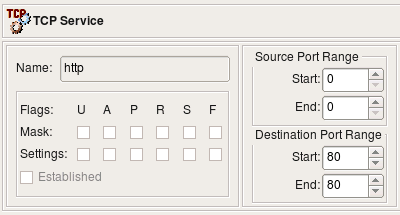Now we put this object in the "Service" element of a rule as shown on the next screenshot. To make this trivial example just a little bit more interesting, I configured the policy rule set as "Combined IPv4 and IPv6" and put two address objects in destination, one is IPv4 address and another is IPv6 address.
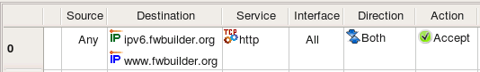This rule compiles into the following for iptables:
# ================ IPv4
# Rule 0 (global)
#
$IPTABLES -A FORWARD -p tcp -m tcp -d 70.85.175.170 \
--dport 80 -m state --state NEW -j ACCEPT
# ================ IPv4
# Rule 0 (global)
#
$IP6TABLES -A FORWARD -p tcp -m tcp -d 2001:470:1f0e:162::2 \
--dport 80 -m state --state NEW -j ACCEPT
And for PF we get the following. Note that PF version was set to "any" or "3.x", this is why "keep state" was added. "Keep state" is default for PF 4.x and if version was configured as "4.x" in this firewall object, policy compiler would have dropped "keep state" from geenrated configuration.
# Rule 0 (global)
#
pass in quick inet proto tcp from any to 70.85.175.170 port 80 keep state
pass out quick inet proto tcp from any to 70.85.175.170 port 80 keep state
# Rule 0 (global)
#
pass in quick inet6 proto tcp from any to 2001:470:1f0e:162::2 port 80 keep state
pass out quick inet6 proto tcp from any to 2001:470:1f0e:162::2 port 80 keep state
In the next example we look at the TCP service object that defines specific source port range to match source ports greater than or equal to 1024:
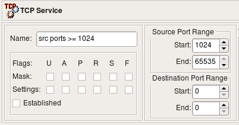Using this object in a rule as follows:
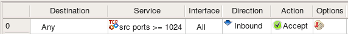To make the rule slightly more realistic, I made it stateless using its options dialog (double click in the column "Options" of this rule and check checkbox "Stateless" in the first tab of the dialog). Lets see what the prgram generates when this rule is compiled for iptables:
# Rule 0 (global)
#
$IPTABLES -A FORWARD -i + -p tcp -m tcp --sport 1024:65535 -j ACCEPT
Here is what is generated for PF 3.x:
# Rule 0 (global)
#
pass in quick inet proto tcp from any port >= 1024 to any
And for PF 4.x we get "no state" because the rule is stateless and state matching is the default in PF 4.x:
pass in quick inet proto tcp from any port >= 1024 to any no state
Cisco IOS access list statement looks like this:
ip access-list extended e1_1_in
!
! Rule 0 (global)
!
permit tcp any gt 1024 any
exit
Some of the supported firewalls understand special flag "established" intended to match reply packets of the tcp session. Stateless systems, such as Cisco IOS extended access lists, match combination of tcp flags where flag "ACK" is set but flag "SYN" is cleared when this keyword is used in the acl rule. Stateful firewalls such as iptables or PF offer much better way to track and match reply packets because they can follow the states a tcp session goes through when it is opened, data transferred and finally session is closed. Firewall Builder provides an option of using flag "established" but supports it only for those firewall platforms where there is no better alternative. Attempt to use TCP service object with this flag set in rules for the firewall that supports stateful inspection causes an error.
Here is an example of the TCP service object with flag "Established" set and source port range "80-80", that is, this object describes TCP packets coming from the web server operating on the standard port 80 back to the client.
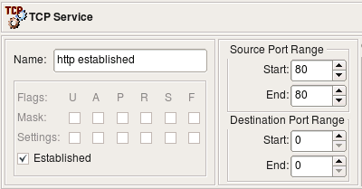Using this object in a rule:
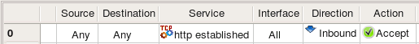Here is the access list generated for Cisco IOS:
ip access-list extended e1_0_in
!
! Rule 0 (global)
!
permit tcp any eq 80 any established
!
Here we have source port specification "eq 80" and keyword "established"
Attempt to compile this rule for iptables or PF causes an error:
Error (pf): TCPService object with option "established" is not supported
by firewall platform "pf". Use stateful rule instead.
The UDP Service object is a generalization of the UDP protocol, which is a connectionless transport layer protocol. Many well-known applications use UDP as their transport, such as DNS (Domain Name System), DHCP (Dynamic Host Configuration Protocol), NTP (Network Time Protocol), and SNMP (Simple Network Management Protocol)..
As in TCP, UDP uses port numbers to distinguish applications from one another. The UDP packet header carries two port numbers: the source port and the destination port. The UDP Service object in Firewall Builder allows for a definition of ranges for both the source and the destination ports. The meaning of values assigned to the start and end of the range is the same as in the TCP Service object: ranges are inclusive, that is, both start and end ports of the range are included. Using ’0’ for both the start and end of the range means ’any port’. These rules work for both the source and destination ranges. The following screenshot shows the ’dns’ UDP Service object that represents the Domain Name System protocol which uses destination port 53.
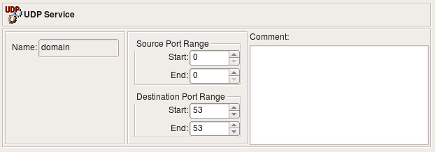Service objects in the Standard are not editable. However, you can copy-and-paste a copy of a service object into the User tree and edit it there, or you can right-click the ICMP folder in the User tree and select New ICMP Ser vice to create a service object from scratch.
The UDP Service dialog provides the following controls:
In this example we'll use the UDP service object "domain" shown on screenshot above. The rule looks like this:
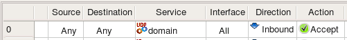Here is iptables command generated for this rule:
# Rule 0 (global)
#
$IPTABLES -A FORWARD -i + -p udp -m udp --dport 53 -m state --state NEW -j ACCEPT
This rule got "-i +" clause because direction was set to Inbound but "Interface" column was left empty. To enforce inbound direction compiler uses "-i" option but since interface was not speficied, the rule gor attached to all interfaces which is defined by the +.
Here is generated PF 4.x configuration:
# Rule 0 (global)
#
pass in quick inet proto udp from any to any port 53
In the pf config direction is defined by the "in" keyword, and since no interface was requested, there is no "on <interface>".
Generated Cisco access list statement is quite trivial:
ip access-list extended fe0_0_in
!
! Rule 0 (global)
!
permit udp any any eq 53
!
exit
The following UDP service object defines source port range of the ports with values greater than or equal to 1024:
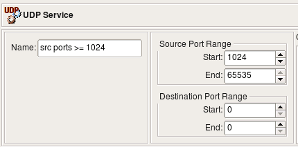Using this object in policy rule yields the following code for iptables:
# Rule 0 (global)
#
$IPTABLES -A FORWARD -i + -p udp -m udp --sport 1024:65535 -m state --state NEW -j ACCEPT
And for PF:
# Rule 0 (global)
#
#
pass in quick inet proto udp from any port >= 1024 to any
Cisco access list statement:
ip access-list extended e1_0_in
!
! Rule 0 (global)
!
permit udp any gt 1024 any
!
exit